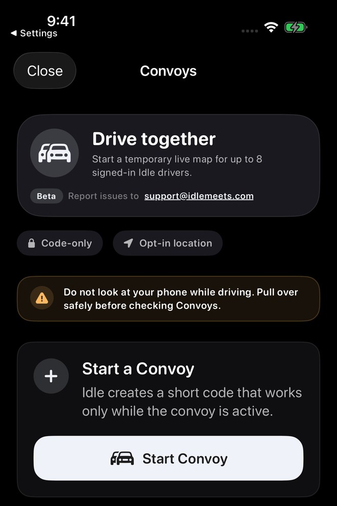
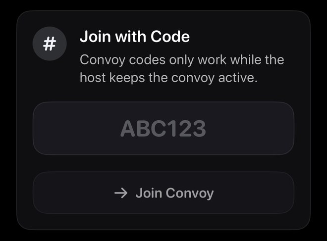
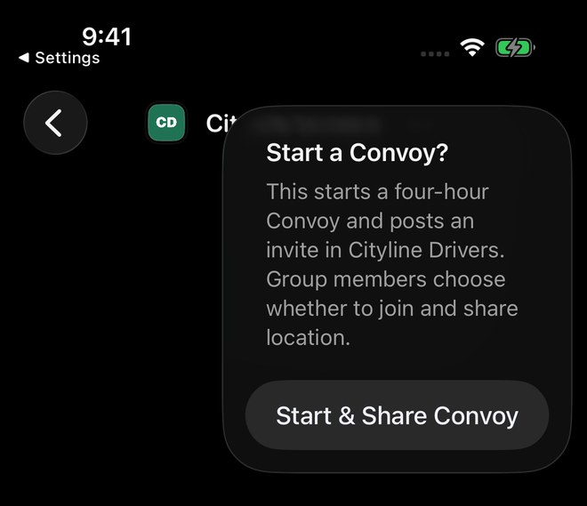
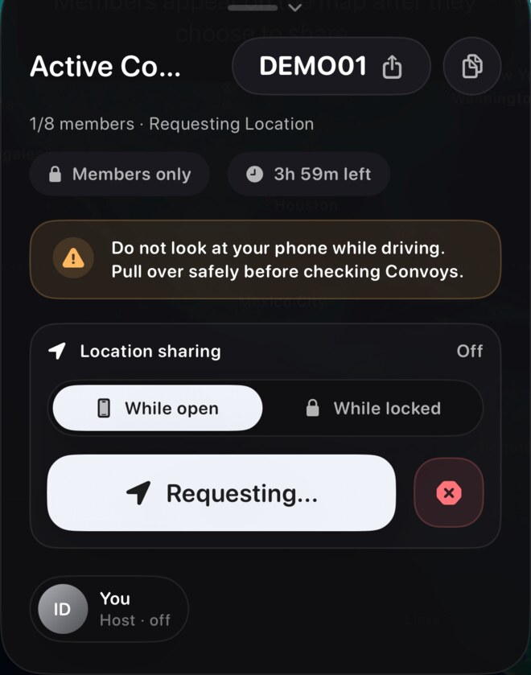
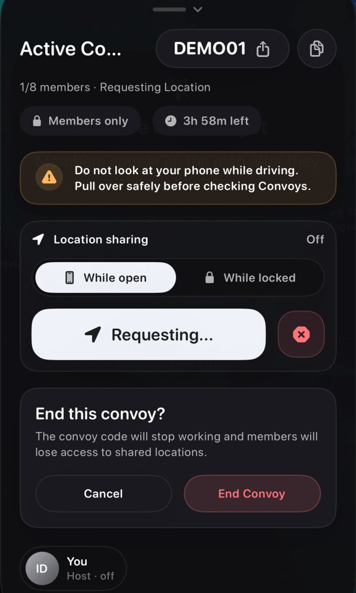

Screenshots show sample content from the Idle test drive in a prerelease build, version 1.3.0 (1), using Dark appearance and Alpine White. Your app may look different. Learn about the test drive.
Find the Convoys entry
From Home, tap your avatar to open the sidebar, then choose Convoys. Set up or change Convoy settings while parked.
The entry screen describes a temporary map for up to eight signed-in drivers and shows Code-only and Opt-in location labels. This is the entry state, before an active Convoy.

Join with a current code
Join with Code has a code field and a Join Convoy button. The screen says codes work while the host keeps the Convoy active.
Use the current code supplied by the host. ABC123 in the image is a placeholder, not a code you can join.

Check a group creation prompt
A group-chat Convoy entry can show a combined Start & Share Convoy action. Read the prompt before continuing: the captured example says it starts a four-hour Convoy and posts an invite in the named group.
This combines creation and an invitation in one action. The screenshot shows the unconfirmed prompt; no Convoy or invitation was created.

General steps
- Open Convoys in Idle.
- Start a new Convoy or enter a join code from another driver.
- Share the code, link, or a Messages invite with the drivers who should join.
- Choose whether to share location while actively in the Convoy.
- Leave when done, or end the Convoy if you are the host.
The earlier screenshots show entry screens; the active example below adds local start/end evidence. Code/link/invite sharing, live membership, location, Voice, leaving as a member, and expiry remain unverified.
What to expect
Convoys are meant for active members. They are not a public map or permanent tracker. Expired, ended, or left Convoys should not keep acting like active drives.
Join optional Convoy Voice
Voice is available for active Convoy members using real accounts, where supported. At least two active members must be ready. Voice and location sharing are separate choices.
- Open your active Convoy while parked and tap Join Voice.
- Allow microphone access when prompted.
- Wait for another ready member or for the connection to complete. Tap Cancel Voice to stop waiting or joining.
- Once connected, use mute and the available audio controls.
- Tap Leave Voice when finished.
Joining and Reconnecting mean the connection is not ready yet. Wait for recovery, or cancel or leave and try again while the Convoy is active. Leaving or ending the Convoy, expiry, or switching accounts ends your Voice session. Real Voice is unavailable during a test drive.
Review an active Convoy and end it as host
After Start Convoy, review the active code, member count, time remaining, and location-sharing state. In this local Demo, the code is DEMO01, the count is 1/8, and sharing is Off.
The host’s end control opens End this convoy?. Read the confirmation, then choose End Convoy to finish or Cancel to keep it open. Confirming End Convoy returned this local sample to the Start/Join screen.
This single-member Demo does not verify joining, live members, capacity enforcement, expiry, Voice, or shared-link delivery.




Troubleshooting
- Code will not joinConfirm the code is current and that you are signed in.
- Messages invite will not joinThe Convoy may have ended, expired, or become full.
- Link opens the websiteConfirm Idle is installed on that iPhone and try opening the link again.
- Convoy looks inactiveIt may have ended or expired.
- Voice will not connectCheck microphone permission, your connection, and that at least two active members are ready. Cancel the pending attempt and retry if needed.
- Voice keeps reconnectingTry again with a stable connection. If it continues, contact support with your app version, iPhone model, and whether you were using speaker, headphones, or Bluetooth.
Privacy note
You should not see member locations until you join an active Convoy and members choose to share. For concerns, email support@idlemeets.com.
Driving safety
Set up or change Convoy settings while parked. Do not interact with Idle while driving.